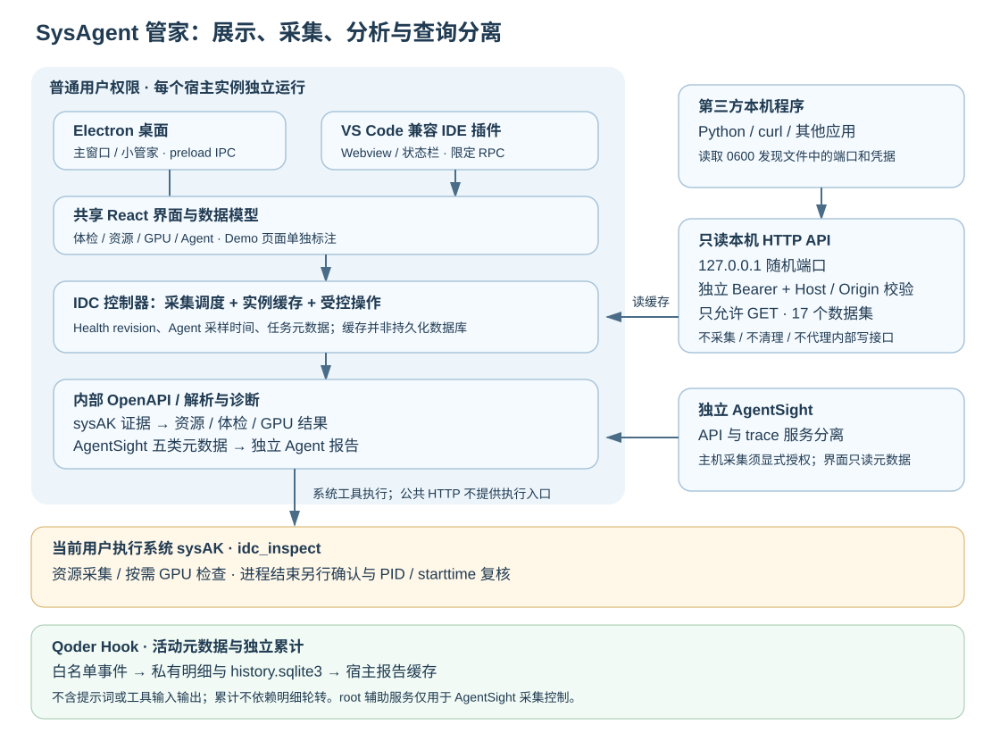
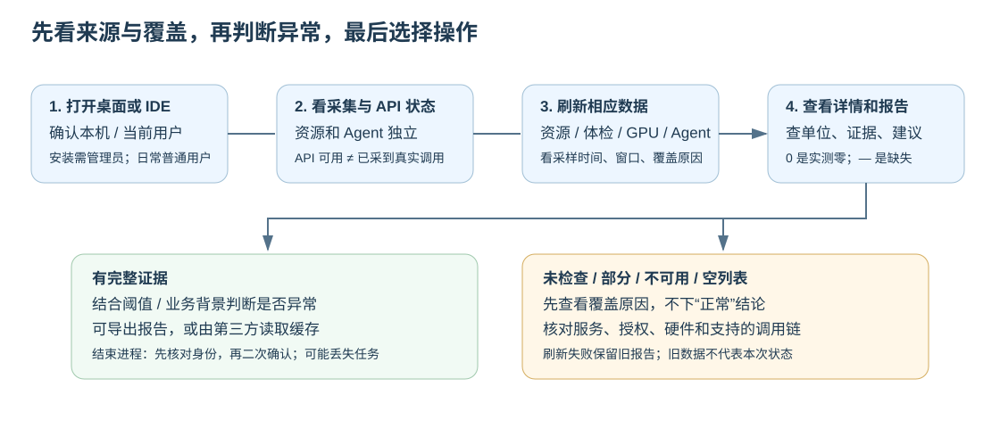

SysAgent 管家功能与使用指南
本文面向首次使用桌面或 IDE 管家的用户，说明安装后的操作、指标含义、数据范围与隐私边界。浏览器阅读版可在本地打开；复制阅读版时同时保留 assets/user-guide/ 结构图目录。
先分清三件事： 页面存在，不等于来源可用；请求成功，不等于设备或业务健康；读取缓存，不等于运行了一次采集。所有结论都应结合来源、时间、覆盖和执行状态。
阅读路线
- 首次使用： 第 1–3 节介绍组件、入口与体检首页。安装步骤见项目 README。
- 定位资源占用： 第 4 节说明排行、功率与受控进程结束。
- 查看 GPU 或 Agent： 第 5–6 节说明真实证据、图表与明细。
- 区分演示与真实能力： 第 7–9 节说明演示页面、报告与能力边界。
- 脚本对接： 第 10 节说明本机查询，完整示例见HTTP API 文档。
1. 管家是什么，哪些组件提供数据
| 模块 | 回答的问题 | 数据与能力 |
|---|---|---|
| 体检首页 | 资源是否紧张？哪些检查需关注？ | 本机资源、评分、项目证据、报告与巡检配置；可选云端结论 |
| 资源详情 | 谁占 CPU、内存或产生 I/O？功率怎样？ | 已采集进程 Top10、Agent 筛选、CPU 进程功率估算、受控进程结束 |
| GPU 诊断 | 卡上有哪些指标与异常证据？ | 逐卡资源、按需原生检查和已有作业证据；事件案例属于演示 |
| Agent 管家 | 活动、工具、协作和调用状态怎样？ | Hook 累计统计与有界明细；AgentSight 会话、Token、中断、延迟与进程探活 |
| 设备管理 | 如何组织设备展示？ | 本机部分指标真实，远端设备与接入流程为演示 |
| 研发运维／日志分析 | 如何组织部署与日志分析流程？ | 内置示例和模拟任务，不部署应用、不读取真实日志 |
| 本机查询接口 | 其他应用可以读取哪些结果？ | 只读 HTTP、17 个缓存数据集和 OpenAPI 契约 |
桌面与 IDE
- 桌面： Electron 主窗口与可拖动的悬浮小管家。
- IDE： VS Code 兼容宿主的 Webview 面板与状态栏，例如 VS Code、Qoder IDE。Qoder Desktop 独立应用和 JetBrains 不支持该 VSIX。
两端复用页面与业务逻辑，但每个宿主的资源缓存、巡检设置、设备标识和 HTTP 查询实例独立。相同用户环境可共享 Hook 存储与 AgentSight 来源，不表示资源快照自动同步。IDE 读取的是本地扩展宿主机器，不自动读取 SSH 远程工作区。

资源采集、Hook、AgentSight 和公共查询是独立边界。公共 HTTP 只能读缓存，不使用内部分析凭据，也不通过 root socket 执行操作。
2. 首次打开：先看来源，再看结果
2.1 安装前提
运行桌面需要 Linux x86_64 图形环境与 glibc 2.38+。IDE 需要 VS Code API 1.85+；Qoder Hook 运行需要 Linux 与 Python 3.6+。完整系统安装的依赖、校验和管理员授权见README。
- 日常启动桌面和 IDE 使用普通用户，不用 sudo 启动 GUI。
- 系统资源需要已安装、当前用户可执行的 sysAK，并包含
idc_inspect组件与匹配规则。管家依次查找SYSOM_SYSAK_BIN、/usr/bin/sysak、/usr/local/bin/sysak、PATH；主 deb 不安装 sysAK，组件缺失时不联网下载。 - 包内私有 sysAK bundle 与
sysom-idc.service用于 AgentSight 采集控制，不是系统资源采集的前提。 - AgentSight 与 Hook 各自提供独立来源；缺少其中一种不表示另一种也不可用。
- 云端巡检需要显式提供环境变量凭据，未配置时只展示本地结果。
2.2 桌面操作
- 从应用菜单打开“SysAgent管家”，或执行
sysagent-idc。 - 在主页查看体检与资源，点击左侧导航切换模块。
- 关闭或最小化主页会收起为小管家；单击恢复，拖动调整位置。
- 右键小管家选择“退出”才会彻底退出。该实例的巡检与查询服务随之停止，独立 AgentSight 服务不自动停止。
2.3 IDE 操作
- 在命令面板使用“从 VSIX 安装”，选择完整交付目录中的插件并按提示重载。
- 点击状态栏 SysAgent，或执行 SysAgent管家: 打开体检主页（
sysagent.openHome）。 sysagent.inspect提供立即巡检入口。- 关闭面板不等于扩展退出，可以再次打开；状态栏告警可进入相应详情。
2.4 无数据、部分结果与刷新失败
| 现象 | 应如何理解 |
|---|---|
| 未找到已安装的 sysAK | 本机未安装或不在解析路径，先准备完整系统工具 |
| 缺少 idc_inspect 组件 | 二进制存在但组件或规则不完整，不会自动下载 |
| 仅支持 Linux | 当前宿主不能运行此系统采集链路 |
—、null、N/A、不可用 |
没有可靠数值，不转换为零或正常 |
| 已检查但结论受限 | 检查覆盖不足，只解释已有证据 |
| 旧结果 · 刷新失败 | 展示的是上次报告，应使用原采样时间 |
| 上次报告 · 更新中 | 新结果尚未返回，不当成本次已完成 |
资源与 Agent 的链路独立，应分别检查原因。修复来源问题后用“重试加载”或“刷新诊断”；“资源快照与诊断结论已刷新”不表示所有深度检查或云端分析都已完成。

3. 体检首页：概况、评分、巡检与云端报告
3.1 首页从上到下看什么
- 健康中心与结论： 当前设备、可评分范围和总体说明；有云端报告时提供云端结论。
- 重要异常、其他异常、尚无定论： 区分已确认异常和缺证据项目。
- 资源卡片： 数值、单位、状态、采样时间与详情入口。
- 体检项目： 各项执行状态、已有证据与建议。
- 性能监视与操作记录： 当前快照和本实例内已有操作，不是持续历史监控库。
3.2 常用按钮
| 按钮 | 行为 | 边界 |
|---|---|---|
| 刷新整体数据 | 更新资源快照与本地诊断结论 | 不等于所有深度诊断重跑；有云端凭据时采集会上传 |
| 重新体检 | 运行既有体检链路并更新结果 | 需要等待并检查来源与覆盖，失败不是正常 |
| 体检报告 | 有云端报告时打开云端报告，否则打开本地报告 | 使用已有结果，不是历史报告库 |
| 巡检配置 | 设置本实例启停与周期 | 不开启 AgentSight eBPF 采集 |
真实采集模式不提供一键自动修复。“一键优化”等模拟操作不能用于真实业务；实际进程结束有独立二次确认。
3.3 评分规则
点击“评分计算规则”查看范围，计算为：
分数 = 100 - 重要异常数 × (80 / 重要检查数)
- 其他异常数 × (20 / 其他项与已知资源总数)
结果限制为 0～100；分母为 0 时该项扣分为 0。
- 重要检查数是重要项总数；其他分母是其他检查总数加已取得的资源百分比个数。未检查项仍在项目分母中，因此必须同时看覆盖提示。
- 重要异常来自已检查且使用率超过 90% 的重要项；其他异常包含其他已确认异常及超过 90% 的已知资源百分比。
- 功率 W 不是百分比预算，不用于“超过 90%”扣分。缺失资源比例不参与阈值比较。
- 100 分不代表未知项已检查；图例
<60、60–80、80–90、90–100只帮助确定关注优先级。
3.4 巡检配置
- 打开“巡检配置”，查看启停、上次与下次巡检。
- 选择 1、5、15、30、60 分钟等预设，或输入自定义小时和分钟。
- 合计须为 1–1440 分钟的整数；24 小时时分钟为 0，默认 5 分钟。
- 保存后重新计时；暂停或退出宿主停止本实例巡检。
“暂无巡检”表示未记录上次运行，不表示故障；界面轮询缓存不等于实际执行巡检。
3.5 每项结论
| 显示 | 含义 | 下一步 |
|---|---|---|
| 正常 | 本次已检查项未满足对应异常规则 | 核对时间和范围 |
| 异常 | 已有证据满足规则 | 查看证据、建议与业务影响 |
| 未检查 | 没有本项结果 | 不下正常结论 |
| 已检查 · 结论受限 | 取得部分证据 | 阅读缺失原因 |
| 已尝试 · 不可用 | 通道未取得可用证据 | 核对服务、权限、组件与硬件 |
根分区、目录、FD 和内存检查有真实链路，但扫描范围、进程数量、插件或权限会限制覆盖。独立 Agent 管家可用，不代表首页 Agent 状态检查完整；日志、网络、I/O 等项目也只能按实际执行状态解释。
3.6 云端巡检
默认不上传。只有同时提供 SYSOM_POP_ENDPOINT、SYSOM_ACCESS_KEY_ID、SYSOM_ACCESS_KEY_SECRET 时才进入云端预发模式；可选 SYSOM_SECURITY_TOKEN、SYSOM_REGION_ID（默认 cn-hangzhou）、SYSOM_DEVICE_ID。SYSOM_IDC_UPLOAD=0|false|no|off 强制关闭上传。凭据只由环境或已有密钥机制提供，不写入源码、界面、日志或命令行。
| 阶段 | 执行方 | 内容 |
|---|---|---|
| 申请地址 | sysAK | CreateHostInspectionUploadUrl 获取预签名上传地址 |
| 上传 | sysAK | PUT 本次采集快照 |
| 提交 | sysAK | SubmitHostInspection 获取巡检标识 |
| 分析 | 云端 | 生成检查结论与报告 |
| 取报告 | 桌面／IDE | GetHostInspection 轮询，再调用 GetInspectionReport |
- 上传包含资源、进程与检查证据，不含 Agent 对话正文；接受上报范围后再配置。
- 上传成功后每 3 秒查询任务，最长等待 120 秒。上传失败保留本地结果并提示“本次仅本地采集”。
- 首页展示云端状态与进度；有报告时显示级别、巡检项与异常数、实例统计和重点异常。
- “体检报告”弹窗展示报告名、级别、主机与时间范围、检查项名称和逐项原因；没有项级结果时明确说明。
- 正常／建议／警告／错误／严重来自云端规则，不是本机评分；部分完成表示证据或检查不完整，不等于全部正常。
- 云端结果只存在当前宿主内存；退出不保留历史报告，新采集取代正在进行的轮询。查询 API 的 GET 不触发上传或轮询。
4. 资源详情：单位、排行、功率与进程操作
4.1 指标单位
| 资源 | 卡片指标 | 进程排行 | 不代表什么 |
|---|---|---|---|
| CPU | 整机使用率 | 进程占整机 CPU 的份额 | 不一定等于单核口径工具数值 |
| 内存 | 使用量、总量与比例 | RSS 常驻内存 | 不是全部虚拟地址空间 |
| 磁盘 | 文件系统空间使用与可用量 | 读写 I/O 速率，B/s | 不是目录大小或进程占据的磁盘容量 |
| 能耗 | 已测或估算的当前 CPU/GPU 功率，W | CPU 功率按进程 CPU 份额估算 | 不是累计电量 kWh，不是 GPU/Session 独占功率 |
| GPU | 利用率与逐卡资源 | 仅使用实际返回字段 | 卡级利用率不能冒充进程利用率 |
1 GiB = 1024³ B，1 MiB = 1024² B。0 是来源报告的零值；缺失、未知与不可用不表示零。
4.2 查谁占用资源
- 点击资源卡片“详情”，核对采样时间、名称、PID、指标与单位。
- 用名称或 PID 搜索，或切换“全部程序／只看 Agent”。
- 排行按对应指标显示 Top10。Agent 根据常见进程名称白名单识别，可能漏识别，不自动推断 Session。
- 采集保留有界排行，通常为整体 Top20 与 Agent Top20 的去重并集；HTTP 只能读取完整已缓存结果，不扩大采集范围。
筛选无结果不证明进程不存在。真实资源页不提供 Session 资源树或 Session 级释放 CPU/GPU。
4.3 能耗详情与进程 CPU 功率估算
能耗详情先显示功率构成（CPU、GPU、数值与来源），再显示未归因 CPU 功率和进程 CPU 功率估算排行。
- CPU 优先使用 RAPL package 功率。无有效读数时，以整机忙碌比例乘以全负载参考功率估算；默认参考值为每个逻辑核 5 W。
- GPU 优先使用传感器功率；无有效读数时，以利用率乘以功率上限估算，功率上限缺失时参考每卡 150 W。
SYSAGENT_CPU_FULL_LOAD_WATTS、SYSAGENT_GPU_FULL_LOAD_WATTS可校准估算参考值，要求0 < W ≤ 100000，不改变实际传感器读数。- 测量、估算、混合来源分别标注。只覆盖 CPU/GPU 已取得部分，不代表墙插整机功率。
进程 CPU 功率估算 = CPU 功率 × 进程占整机 CPU 比例 / 整机忙碌 CPU 比例
归因需要有效的 CPU 与进程样本、可比较的采样窗口。窗口差容许最大 2 ms 或 CPU 窗口的 1%；无法对应时显示未知，不强行计算。未列出的进程与静态功率不强行分摊，GPU 功率不按 CPU 排名分摊，筛选不重新分配功率。
进程功率是估算，不是独立传感器测量。空排行可能表示样本缺失或无法归因，不代表零能耗。
4.4 结束进程
此操作会结束整个进程，可能中断任务或丢失未保存数据。 仅适用于当前用户可核实身份的非受保护进程，与公共查询完全分开。
- 保存工作，确认目标不是必须保留的系统或业务进程。
- 勾选界面允许的目标，最多选择 10 项，点击“清理所选进程”。
- 二次确认中核对名称、PID 与 starttime；确认有效期 60 秒。
- 执行链路复核快照、当前用户权限、受保护范围和进程身份，再发送 SIGTERM。
- 逐项读取结果并核对刷新后的资源；发送成功不保证进程已经退出。
不删除文件、日志、缓存或目录，不自动强杀、不提高跨用户权限，不提供真实 Session 清理。只有“可结束”标记不足以绕过执行复核。
5. GPU 诊断：资源、执行状态与结论
GPU 页面分为 GPU 概览、GPU 诊断、异常事件分析、作业级深度剖析。资源采集和原生检查是不同操作。
5.1 GPU 概览
查看索引、名称、UUID、PCI 总线、利用率、显存、温度、功率、ECC 和 PCIe 等已有字段。点击“刷新本机 GPU 资源”只刷新资源，不执行原生 AI 诊断。
无 GPU、驱动或权限受限、尚未采集是不同状态。字段可独立缺失，ECC 未取得不显示为零。虚拟显示适配器不等于计算 GPU，资源可用也不代表 GX 分析可用。
5.2 GPU 诊断
- 切换“GPU 诊断”，点击运行或重新检查。
- 等待 sysAK 原生
ai与本机分析返回。 - 先看完成、部分、超时、截断、权限受限或错误等执行状态，再看正常、异常、未知或无 GPU 的结论。
- 用搜索与 OK/WARN/ERROR 筛选检查项，查看证据和建议；导出保留全部已有检查项，不受页面筛选影响。
OK 只是某条检查级别，不表示全部完成；WARN 为风险，ERROR 为已返回异常证据。建议不自动执行。原生工具可能写诊断日志，不能把执行称为严格无副作用读取；HTTP 查询缓存不执行工具。
5.3 作业级证据
点击“采集本机作业证据”按需执行原生工具，再搜索或选择已经返回的 PID，查看 CPU、RSS、GPU 关联与 HANG/NCCL/Xid 等已有证据。选择 PID 只是查看结果，不对任意输入 PID 发起追踪，也不选择远端实例。
GX、硬件和驱动影响原生分析；独立资源指标仍可能可用。缺少 name、starttime 或采样窗口时保留不可用，不把命令行当进程名，不据 PID 确定跨快照身份。--threshold 1s 是诊断阈值，不是统一指标采样窗口。卡级 NVML 利用率不代替进程 SM 利用率。
真实页面不提供连续 Timeline、Kernel 热点追踪或全作业生命周期分析。
5.4 异常案例与离线 Profiling
异常事件分析中的越界、HANG、OOM、通信案例，及离线 Profiling 的实例、区域、PID 和采集范围表单均为演示。分析、时间线、日报与告警渠道使用示例数据，不采集输入的实例或 PID、不证明本机故障、不接入真实通知。
6. Agent 管家：Hook 活动与 AgentSight 调用证据
6.1 先区分两种来源与三个时间范围
| 来源／范围 | 提供什么 | 边界 |
|---|---|---|
| Hook 累计历史 | 六项卡片、趋势、类别、会话／工具排行、协作统计 | 独立 SQLite 持久累计，不从最新明细重算 |
| Hook 近 24h 汇总与明细 | Agent 汇总、会话分组、事件轨迹与证据 | 最多处理 5,000 条事件、16 个 Agent；明细最多最新 200 条 |
| AgentSight 近 24h | 进程探活、会话与 Token、中断、未处理汇总、延迟 | 进程最多 256、会话最多 500、中断明细最多 200；以 coverage 为准 |
Hook 不提供 Token 或模型调用延迟。AgentSight 与 Hook 不跨来源关联 Session ID 或 PID；同名 Agent 不代表同一组会话。来源不可用显示 — 或原因，不能改成零。
进入页面或刷新诊断会通过宿主获取来源并分析；报告缓存超过 60 秒会重新获取，手动刷新不使用缓存。公共 HTTP GET 只读已有报告，行为不同。诊断不发起付费模型调用、不自动修复或重启 Agent。
6.2 顶部六项累计统计
| 卡片 | 含义 |
|---|---|
| 已记录会话 | 已记录且可识别的 Hook 会话数，不是全部宿主会话 |
| Hook 事件 | 累计写入的规范事件数 |
| 提交提问 | 提问提交事件数，不保存提问正文 |
| 工具开始 | 工具开始回调数，不是任务完成数 |
| 轮次失败 | 已记录轮次失败事件数，需结合证据关注 |
| 未配对开始 | 未记录到配对结束的工具开始，不等于卡死 |
累计保存在 history.sqlite3，不因明细轮转、筛选或分页而减少。保留明细可用于建立累计基线，记录启用前已删除的数据无法恢复。累计存储不可用时不拿最新 200 条明细推断全历史。
工具失败、授权拒绝、用户中断是来源事件，不直接等于 Agent 故障；回调数量不应解读为任务成功率。
6.3 七个视图怎么用
| 视图 | 内容与操作 |
|---|---|
| 总体统计 | 默认视图；活动趋势、事件构成、会话活动前 8、工具活动前 6、分类统计、需关注问题、延迟对比与进程探活 |
| 会话与明细 | Hook 会话、会话轨迹、近 24h Agent 汇总、最新元数据；按 Agent、事件类型、类别、Session/工具/模型搜索 |
| 工具与协作 | 工具开始/结束/失败/显式中断、子 Agent、任务、信息补充、授权、压缩与工具累计表 |
| 会话 | AgentSight 会话与已记录 Token，搜索 Agent/ID/Model，展开已有关联中断 |
| 中断 | AgentSight 中断类型筛选、只读证据与已有会话跳转 |
| 延迟 | 切换比较指标，查看完整调用与流式调用数及延迟表 |
| 数据接入 | 查看两种来源的覆盖、原因与边界，不安装或开启采集 |
图表到明细： 点击趋势时段、类别、工具或分类入口，进入“会话与明细”并筛选已取得的最新事件。累计排行只显示累计，不保证其对应事件仍在明细中；会话累计排行使用匿名标识，不自动映射为 AgentSight 会话。
分页： 事件、分类、工具统计可选每页 5/10/20 条；其他表与轨迹也有分页。筛选回到相应首页，分页只改变显示，不追加采集、不改变累计。进程探活支持名称/PID、角色和状态组合筛选，每页 20 条。
6.4 Hook 会话轨迹与证据
在“会话与明细”选择“查看轨迹”，按时间升序阅读已有事件，再打开只读证据。字段包含 Agent、事件类型、发生时间、Hook Session ID、Call ID、工具、错误类型、模型、子 Agent 和 interrupt。
interrupt=true/false 是来源报告值，null 是未报告，不自行推断取消或故障。明细不足时可能没有配对回调，累计与最新列表条数不同是正常的数据范围差异。
6.5 安装 Qoder Hook 插件
校验交付件后，Qoder 独立应用／CLI 导入 sysagent-qoder-plugin-0.2.19.zip，Qoder IDE 导入 sysagent-qoder-ide-plugin-0.2.19.zip。确认已启用并按提示重载；IDE 需要重启以加载 Hook 配置。插件不需要 root 或 pip，不安装 sysAK、AgentSight 或 VSIX。
| 事件组 | Qoder 独立应用／CLI | Qoder IDE |
|---|---|---|
| 会话与提问 | SessionStart、SessionEnd、UserPromptSubmit、Stop、StopFailure、Notification | SessionStart、SessionEnd、UserPromptSubmit、Stop、Notification |
| 工具 | PreToolUse、PostToolUse、PostToolUseFailure | 同左 |
| 授权 | PermissionRequest、PermissionDenied | PermissionRequest |
| 子 Agent | SubagentStart、SubagentStop | 同左 |
| 任务与交互 | TaskCreated、TaskCompleted、TeammateIdle、Elicitation、ElicitationResult | 不注册 |
| 压缩 | PreCompact、PostCompact | PreCompact |
| 合计 | 20 个事件 | 12 个事件 |
只有 SessionStart 同步只读查询 /api/v1/summary 缓存，并注入简短本机摘要；无缓存或查询失败不注入。其他 Hook 异步记录，不查询、不注入、不触发采集、修复或模型调用。插件不读取会话文件，不保存提示词、工具输入输出、cwd 或错误正文。
元数据目录为 ~/.local/state/sysagent/agent-hooks/，绝对 XDG_STATE_HOME 可覆盖根目录。events.jsonl 每 1 MiB 轮转为 events.1.jsonl，累计另存 SQLite；目录 0700、文件 0600，不安全权限、所有权或符号链接拒绝且不自动修复，失败不阻断 Agent。
同一存储下的重复安装使用共享锁和 HMAC 指纹去重（5 秒、最多 256 项），不存原始载荷。状态不可用或空载荷时可能重复；无不同标识的合法相同事件可能合并。Linux /proc 祖先检查识别实际 qoder/qoder-ide 标签，不保存可执行路径或环境值。
6.6 AgentSight：API 状态与采集隐私
| 状态 | 含义 |
|---|---|
| 数据服务可用 | API 可查询，不保证有调用历史 |
| 采集停用 | 未启用或已停用，历史仍可能存在 |
| 采集中 | 对应 trace 服务运行，不保证所有协议或客户端都能捕获 |
| 采集失败／不可用／未知 | 没有可靠的正在采集结论，应查看原因 |
安装默认不启用主机级采集。真实 eBPF 可能捕获主机进程的明文、参数和完整会话并本地保存，不能严格隔离进程。GUI 和查询接口只显示元数据，不表示 AgentSight 数据库没有正文；traceEnabled:false 也不代表历史已脱敏。
仅 trace 服务获得包括 CAP_SYS_ADMIN 在内的采集能力，API/GUI/IDE 不获得。专用 API 使用回环端口 7397，回环地址不是多用户鉴权边界。相同 HOME/XDG 可复用用户数据目录；已有明确部署优先，不覆盖配置。
控制入口与核对： 安装脚本的 --enable-agent-collection 表达授权意图；控制器发送 idc --agent-collection 兼容请求，root 服务将其映射到固定 AgentSight 控制脚本，不由 idc_inspect 执行。可信安装、授权、systemd、内核与 eBPF 能力决定实际可用性，不应仅凭授权或 API 连通认定采集已开启。检查及停用方式见README。
托管数据库合计 50 MiB 是周期性软清理目标，WAL、忙锁、空页可能超出；停用不删除历史。敏感或多用户机器应先评估采集范围，不公开配置、令牌或数据库。
6.7 进程、会话与中断
- 进程探活： HTTP 响应不保证业务完整；CLI 无监听端口不直接等于异常。结合超时、不可达、退出、崩溃记录和检查时间核查，不自动重启。
- AgentSight 会话： 输入/输出 Token 是近 24h 已记录用量，包含辅助调用，输入含缓存用量；上游未报告 usage 的调用可能未计入。不是费用、完整消耗或会话终身累计，也不是顶部 Hook 卡片。
- 展开会话： 仅查看首末时间和报告已有的关联中断，不读取正文、不提供 Session 资源归属或清理。
- 中断证据： 九字段为事件 ID、类型、严重度、发生时间、Session ID、Call ID、PID、Agent、处理状态；只在报告已有相应会话时提供跳转。
- 处理边界： 中断页不标记解决、不重启、不修复；明细可能少于汇总。模型错误、SSE 截断、上下文超限、工具错误、用户取消等只按实际来源解释。
6.8 延迟指标
| 指标 | 含义 | 阅读方法 |
|---|---|---|
| TTFT P95，ms | 首 Token 前等待时间的第 95 百分位 | 仅流式调用，通常越低越好 |
| E2E P95，ms | 完整调用总耗时的第 95 百分位 | 受输出长度等影响 |
| TPS P50，Token/s | 生成速度中位数 | 通常越高越快 |
| TPOT P95，ms | 每输出 Token 耗时的第 95 百分位 | 仅流式调用，通常越低越好 |
| 完整调用数／流式调用数 | 指标样本量 | 不是质量分数或成功率 |
P95 不是平均值，P50 是中位数；不同模型、请求长度、窗口与样本量不能直接公平排名。切换比较指标不重新采集；缺失值不画成零。
7. 设备、部署、日志与公共界面
7.1 设备管理
按类型或名称/地址筛选设备。“设为当前设备”只切换展示，不建立远程诊断通道。“接入设备”保存演示配置到当前界面状态，不连接 SSH、不安装远端 Agent、不建立持久资产库。
全局搜索可查功能与设备，Ctrl/⌘ K 打开，Esc 关闭。设置、通知、分析路由等演示操作不表示已接入外部模型、通知或配置平台；配置扫描不在集成范围。
7.2 研发运维
选择 IDC/ECS/本地等演示环境，点击“开始模拟部署”，核对确认后查看模拟阶段与进度。“示例流程完成”只表示演示结束，不部署应用、不执行远程命令、不接入 CI/CD 或大规模调度。
7.3 日志分析
按 ALL/INFO/WARN/ERROR 或关键词筛选内置日志；“暂停／继续模拟／重新模拟”控制模拟进度，“查看优化建议”只展示已有建议。不读取本机日志、不建立索引或告警后台，公共 HTTP 不把内置日志当真实本机数据返回。
8. 报告与导出
| 输出 | 内容 | 边界 |
|---|---|---|
| 本地体检 TXT | 评分范围、资源、项目、证据、建议与采样时间 | 进程排行 Top10，缺失保留原因 |
| 云端报告弹窗 | 总体级别、项级原因、实例与主机范围 | 已有云端结果，不是历史报告库 |
| GPU HTML | 执行状态、来源、覆盖、全部已有检查项与作业证据 | 不受页面搜索过滤，不是完整 Timeline |
| Agent JSON | 诊断窗口、覆盖、Hook 与 AgentSight 元数据 | 不含对话正文，仍可能含敏感标识 |
| GPU 演示 HTML | 内置案例与演示参数 | 不能当实测证明 |
| HTTP report JSON | 已缓存 Health、摘要、文本、Agent 与 GPU | 不创建证据或执行诊断 |
桌面与 IDE 使用各自报告保存流程。导出不创建永久报告库；保存和留存由使用者管理。分享前核对 PID、Session/Call ID、模型名、时间与业务标识，不附凭据发现文件。
9. 能力与使用边界速查
| 能力 | 范围 |
|---|---|
| 本机资源、排行、巡检、评分、报告 | 真实、有界，部分字段和检查可能不可用 |
| CPU/GPU 功率与进程 CPU 估算 | 传感器优先，明确估算与未归因，不提供整机电量或 Session 功率 |
| GPU 原生检查与作业证据 | 按需执行、依赖硬件与 GX，不提供连续深度追踪 |
| Hook 统计、图表与轨迹 | 元数据累计独立持久，明细有界，不提供正文、Token 或调用延迟 |
| AgentSight 诊断 | 独立已有来源、近 24h，API 不等于采集已启用 |
| AgentSight 主机采集控制 | 固定脚本与受限授权，实际运行仍需核对系统能力、服务状态和覆盖 |
| 进程结束 | 当前用户、非受保护身份、确认复核、SIGTERM；公共 HTTP 不开放 |
| 远程设备、部署、日志、GPU 事件案例 | 演示，不执行真实业务 |
| 自动修复、真实 Session 清理、远端执行、配置扫描 | 不提供 |
| 资源与云端历史报告、持久任务库 | 不提供；宿主缓存不等于 Hook/AgentSight 数据库 |
| 本机 HTTP | 17 个已有缓存数据集，认证 GET，不采集、不修改 |
10. 第三方程序对接
10.1 选择只读 HTTP
不要抓取网页 DOM、使用内部 IPC 或 root socket。HTTP 返回稳定结构与能力目录，适合本机 Python、curl、Node、Go 等受信程序。

桌面与 IDE 激活各自查询服务，在宿主用户存储目录下创建 local-api/<实例 UUID>.json。桌面根目录来自 Electron userData，IDE 根目录来自扩展 globalStorageUri。目录 0700、文件 0600；文件含随机回环地址、独立 token、实例与宿主身份。
只读取自己选定的发现文件，使用其中的 127.0.0.1 地址和 Bearer 认证，不硬编码端口、不替换为 localhost、不打印 token、不附浏览器 Origin、不绕过 CORS 边界。正常退出删除本实例发现文件，崩溃可能遗留文件；重启后必须重新核对连通性和实例身份。
10.2 路径与数据集
所有接口只允许认证 GET：
| 路径 | 返回 |
|---|---|
/api/v1/status |
宿主、周期、阶段、任务、采集与云端缓存状态 |
/api/v1/capabilities |
合法数据集、字段、缓存状态与限制 |
/api/v1/snapshot |
一致读取 status、Health state、Agent report 与 tasks |
/api/v1/summary |
评分与未知/不可用范围 |
/api/v1/report |
已有结构化与文本报告 |
/api/v1/datasets/{name} |
缓存列表筛选、排序、投影、分页 |
/api/v1/datasets/{name}/{id} |
当前缓存中的对象详情 |
/api/v1/openapi.json |
OpenAPI 3.1 只读契约 |
| 数据集 | 内容 |
|---|---|
resources |
资源快照、状态、功率与采样时间 |
resource-rows |
完整已缓存排行、身份、单位与 Agent 标识 |
inspections |
检查、结论、执行范围与证据 |
optimizations |
已有建议，不执行 |
operations |
本实例有界操作记录 |
gpu-devices |
逐卡资源遥测 |
gpu-findings |
已有原生检查与作业发现 |
gpu-jobs |
已返回 PID 与作业证据 |
agent-processes |
AgentSight 进程探活 |
agent-sessions |
会话标识、模型、计数、Token、首末时间 |
agent-interruptions |
已有中断元数据 |
agent-latency |
调用数与 TTFT/E2E/TPS/TPOT |
agent-findings |
分析结论与建议 |
agent-coverage |
AgentSight 五类来源状态 |
agent-hook-events |
最新已缓存 Hook 元数据 |
agent-hook-agents |
近 24h 已缓存 Hook Agent 汇总，不是累计全历史 |
tasks |
本进程最多 100 条成功任务元数据 |
没有公共 POST 刷新、结束进程、修复、配置写入、任意文件读取或任意 AgentSight 路径代理。GET 不重新读取 spool 或数据库，不补采、不上传。
10.3 参数、身份与一致性
| 参数 | 语义 |
|---|---|
filter.<field> |
类型化精确匹配，同字段多值 OR，不同字段 AND；标量数组按包含匹配 |
min.<field> / max.<field> |
数字或 ISO 时间含端点范围 |
q |
缓存文本子串，不执行表达式或 SQL |
sort |
多字段，- 表示降序，缺失值在后 |
fields |
合法字段投影，未填返回完整允许对象 |
offset / limit |
默认 0/100，每页 1–1000 |
revision |
Health 一致性条件，不匹配返回 409 |
先从 capabilities 获取合法字段；未知参数、非法类型、重复或重叠投影拒绝。详情仅支持 fields 与 revision，其他状态/报告接口不接受列表参数。
列表直接返回 dataset/meta/total/offset/limit/items/next_offset，不套 data；其他查询通常是 meta 与 data。total 只是筛选后的缓存条数。Health 用 revision，Agent 另用采样时间与窗口；缓存改变时重新查询。
资源行详情用 queryId，即资源名与原始 ID 的组合，整体 URI 编码一次。PID 不足以证明跨快照进程身份；缺少 starttime 的原生来源和生成 ID 只在当前缓存使用。
status.mode=mock 表示未配置云端凭据的部署模式，不等于模拟数据；pre 表示云端模式。结合 state.mode=collected、任务 simulated=false、来源、时间和覆盖判断真实性。
10.4 错误处理与示例
400 对照目录修正参数；401 重新读取自己的活跃发现文件；403 核对 Host/Origin，不绕过边界；404 核对路由与当前 ID；405 不重试写入；409 重新获取一致快照；503 在界面取得相应证据后再查。连接失败重新发现宿主，不能仅凭文件存在判断存活。
HTTP 200 也可能返回部分或不可用的业务对象，必须保留状态与原因。安全的 Python/curl 示例、完整字段与错误契约见本机 HTTP API。
11. 开发与文档阅读
开发说明介绍共享页面、控制器、分析与查询代码；打包说明介绍原生输入、构建目标、交付清单与安装；技术设计说明采集协议、内部接口和安全边界。
统一入口为 npm run build；部分目标为 build:desktop、build:ide、build:web、build:qoder。开发网页不是隔离演示：它挂载真实控制器，刷新会采集，有云端凭据会上传。 只看 UI 时不要注入凭据，必要时用 SYSOM_IDC_UPLOAD=0。
阅读版由 docs/scripts/render-user-guide.py 从本文生成并校验本地链接和结构图。不应手工修改阅读版后让它与 Markdown 内容分离。
12. 常见疑问
| 问题 | 答案 |
|---|---|
| 为什么高分还有未检查？ | 分数只描述已有可评分范围，未知不等于正常 |
| 为什么系统资源不可用但 Agent 有数据？ | sysAK、Hook、AgentSight 是独立链路 |
| 为什么磁盘卡片与排行不对应？ | 卡片是空间容量，排行是进程 I/O 速率 |
| 为什么能耗有值但进程为空？ | 组件功率与进程同窗样本是不同条件，不能归因时显示未知 |
| 为什么 Hook 累计很多但查不到轨迹？ | 明细有界且会轮转，累计不依赖最新明细 |
| 为什么 IDE 有些事件没有统计？ | 宿主注册与事件支持范围不同，未注册不代表发生零次 |
| 为什么 API 可用却没有会话？ | API 不产生历史，trace 可能停用、失败或不支持实际调用 |
| 为什么停用采集后仍有数据？ | 停用不删除历史，应按报告时间和窗口阅读 |
| 为什么 GPU 资源可用而检查失败？ | 传感器与 GX 原生诊断依赖不同 |
| 为什么云端报告重启后消失？ | 云端结果只存在宿主内存，没有历史报告库 |
| 为什么 GET 后数据不变？ | GET 只读缓存，要在页面刷新或等待巡检 |
| 为什么关闭主页还在运行？ | 主页收起为小管家，右键“退出”才彻底退出 |